思维导图

初识汇编
汇编的介绍
- **执行过程**
-
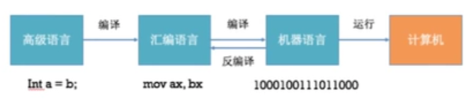
- **特点**
- 汇编语言与机器语言一一对应,每条机器指令都有与之对应的汇编指令
- 汇编语言可以通过编译得到机器语言,机器语言可以通过反汇编得到汇编语言
- 高级语言可以通过编译得到汇编\机器语言,但汇编语言\机器语言几乎不可能还原成高级语言
- 汇编语言可以直接访问,控制各种硬件设备,比如存储器，CPU等,能最大限度的发挥硬件的功能
- 能够不受编译器的限制,对生成的二进制代码直接完全控制
- 目标代码简短,占用内存少,执行速度快
- 汇编指令是机器指令的助记符,同机器指令一一对应,每一种CPU都有自己的机器指令\汇编指令集,所以不具备可移植性
- 学习的时候知识点,挺多的,而且开发者需要对CPU硬件结构有所了解,不易于编译,调试，维护
- 不区分大小写,mov和MOV是一样的
- **用途**
- 编写驱动程序,操作系统,编写linux内核
- 对性能要求极高的程序和代码片段编写,也可以和高级语言混合使用
- 软件安全
- 病毒的分析,防治
- 逆向,加壳,破解,外挂,免杀,加密解密,漏洞,黑客
- 作为理解整个计算机系统运作是个不错的途径
- 为写下高效代码打下基础
- 弄清代码的本质
- 函数的本质是什么
- sizeof底层到底在做什么事情
- ++a, a++ 底层是如何执行的
- 编译器到底帮我们做了那些事情
- DEBUG和RELEASE模式有啥关键地方被我们忽略
- **app执行过程**
-
汇编的种类
- 8086汇编（8086汇编是16位的CPU）
- Win32汇编
- Win64汇编
- ARM汇编（嵌入式,Mac,IOS）
-
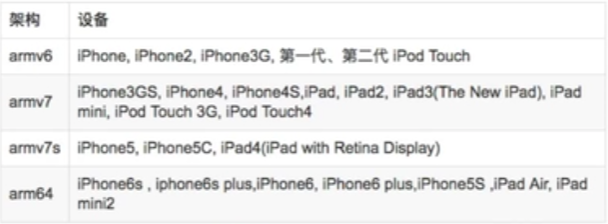
总线
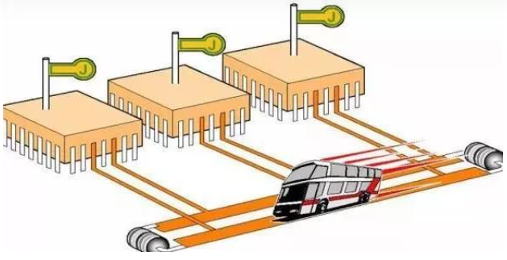
数据总线
-
传送数据信息
- 他的宽度觉得了CPU的单次数据传送量,也就是数据的传输速度
- 8086的数据总线是16,所以单次最大传递2个字节的数据
- 8088的数据总线宽度是8,8086的数据总线宽度是16
地址总线
-
传送地址信息
- 他的宽度决定了CPU的寻址能力
- 8086地址总线的宽度是20,所以他的寻址能力是1M(2^20)
控制总线
- 传送控制信息(完成总线操作功能)
QA
-
为什么用16机制
- 因为简短,容易识别查看
-
0XFF
- 用两个16进制位F表示一个字节
-
H结尾的是多少进制
- 代表16进制和OX一个意思 H的单词是Hexadecimal
-
寻址的能力
-
我们都熟知32为的操作系统的寻址空间的大小为4G，因此我们安装一个32位系统在配置4g的内存条，这似乎非常完美。但是当我们打开任务管理器发现我们的物理内存只有3g左右
- 寻址空间一般指的是CPU对于内存寻址的能力。通俗地讲，就是最多能用到多少内存的一个问题。数据在存储器（RAM）中存放是有规律的，CPU在运算的时间需要把数据取出来，就必须 需要知道数据储存在哪里，这时我们需要挨家挨户地找（也就是在其能够寻址的空间进行查找），这就叫做寻址。 但是如果地址超出了CPU的寻址范围，CPU就无法找到数据了。CPU最大查找多大范围的地址叫做寻址能力，CPU的寻址能力以字节为单位。
-
地址总线找地址图示
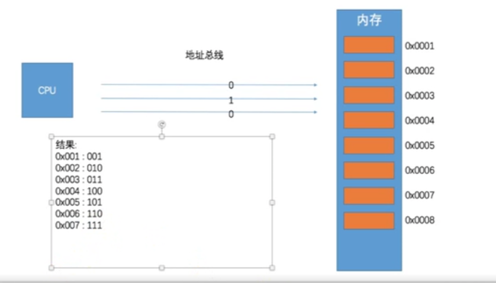
CPU
内部部件之间由总线连接
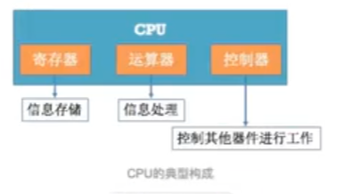
内存
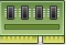
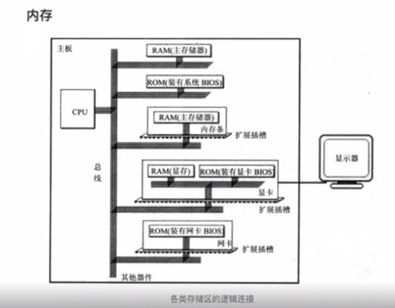
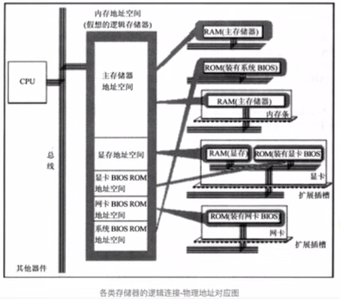
-
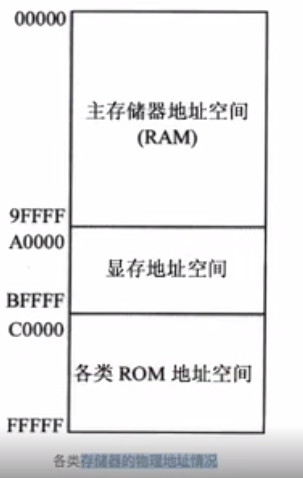
内存地址空间的大小受CPU地址总线宽度的限制,8086的地址总线宽度为20可以定位2^20个不同的内存单元(内存地址范围0x00000~0xFFFFF)所以8086的内存地址为1MB
0x00000-0x9FFFF 主存储器,可读可写
0xA0000-0xBFFFF 向显存中写入数据,这些数据会被显卡输出到显示器,可读可写
0xC0000-0xFFFFF 存储各种硬件/系统信息,只读
寄存器
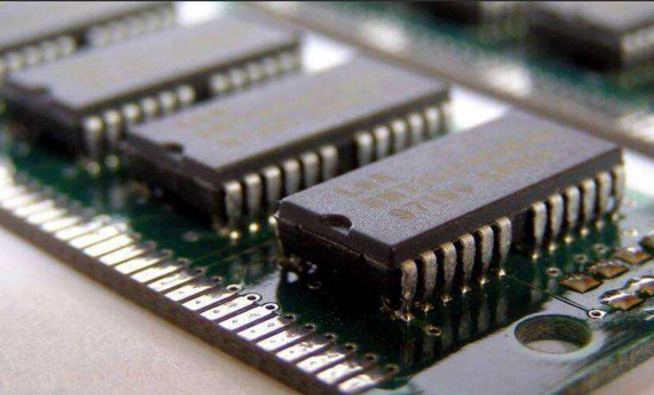
CPU最主要的部件是寄存器,可以通过改变寄存器的内容实现对CPU的控制
不同的CPU,寄存器的个数,结构是不相同的(8086是16位结构的)
8086有14个寄存器
- 都是16位的寄存器
- 可以存放2个字节
8086寻址
CPU访问内存单元时,要给出内存单元的地址,所有的内存单元都有唯一的地址,叫做物理地址
8086有20位地址总线,可以传送20位的地址,1M的寻址能力
但它又是16位的CPU,它内部能够一次性出力,传输,暂时存储的地址为16位,如果将地址从内部简单的发出,那么它只能发送出16位的地址,表现出来的寻址能力只有64KB
8086寻址能力1M地址方位== 0x00000 - Oxfffff
假设有个地址:OxCFFA7 我们16位CPU没法直接接受这个数据 因为只能接受最大OxFFFF
-
0xCFFA7 = 0xCFFA * 16 +0x007 OxCFFA7 = 0xCFF0 16 + 0x0A7 OxCFFA7 = 0xCF00 16 +OxFA7 物理地址=段地址* 16 +偏移地址
-
8086采用一种在内部用2个16位地址合成的方法来生成1个20位的物理地址 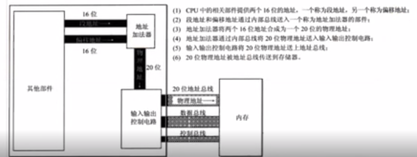
-
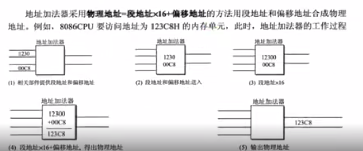
内存分段管理
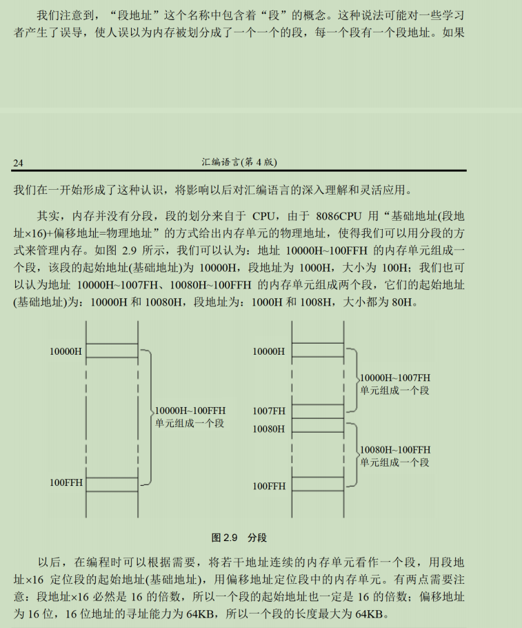
段寄存器
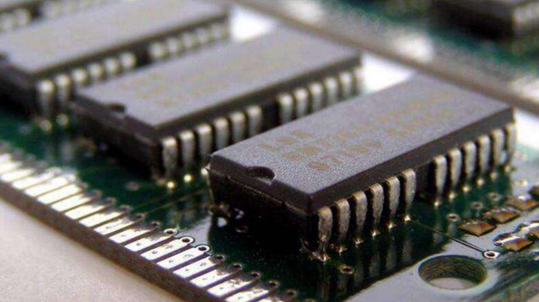
8086在访问内存时要由相关部件提供内存单元的短地址和偏移地址,送入地址加法器合成物理地址
段地址在8086的段寄存器中存放
8086有4个段寄存器
- CS(Code Segment):代码段寄存器
- DS(Data Segment):数据段寄存器
- SS(Stack Segment):堆栈寄存器
- ES(Extra Segment):附加段寄存器
CS和IP
CS为代码段寄存器,IP为指令指针寄存器,它指示了CPU当前要读的指令地址
任意时刻,8086CPU都会将CS:IP指向的指令作为下一条需要取出执行的指令
QA
-
为啥是偏移3个字节
- 因为这里的汇编指令是3个,占3个字节
-
8086开机第一条指令
- 在8086CPU 加电启动或复位后(即CPU 刚开始工作时)CS 和IP被设置为CS=FFFFH，IP-0000H，即在8086PC机刚启动时，CPU从内存FFFFOH单元中读取指令执行,FFFFOH单元中的指令是8086PC机开机后执行的第一条指令。
-
CS端才有IP,数据段不需要IP
- IP是告诉CPU CS寄存器往下走多少偏移是我的代码指令,数据段是不需要这个的,只需要偏移地址 偏移地址就是[…]
jmp指令
指令和数据
-
在内存或者磁盘上，指令和数据没有任何区别，都是二进制信息
-
CPU在工作的时候把有的信息看做指令，有的信息看做数据，为同样的信息赋予了不同的意义
-
例如，内存中的二进制信息1000100111011000，计算机可以把它看作大小为89D8H的数据来处理。也可以将其看作指令mov ax.bx来执行。 1000100111011000—>89DeH(数据) 1000100111011000–>mov px,bx(程序)
-
CPU根据什么将内存中的信息看做指令?
- CPU将CS:IP指向的内存单元的内容看做指令
- 如果内存中的某段内容曾被CPU执行过，那么它所在的内存单元必然被CS:IP指向过
jmp指令
- CPU从何处执行指令是由CS、IP中的内容决定的。我们可以通过改变CS、IP的内容来控制CPU执行目标指令
- 8086提供了一个mov指令(传送指令)，可以用来修改大部分寄存器的值，比如 mov ax 10、mov bx,20mov cx,30、mov dx,40
- 但是，mov指令不能用于设置CS、IP的值，8086没有提供这样的功能
- 8086提供了另外的指令来修改CS、IP的值，这些指令统称为转移指令，最简单的是jmp指令
数据段DS寄存器
CPU要读写一个内存单元时，必须要先给出这个内存单元的地址，在8086中，内存地址由段地址和偏移地址组成
8086中有一个DS段寄存器，通常用来存放要访问数据的段地址
mov bx,1000H
mov ds, bx mov al,[0]
-
al是低八位
-
[…]里面放的是偏移地址
-
mov al,[0] 等价于mov al,[ds:0] 等价于1000H地址偏移0位
-
[0]左边的指令寄存器al决定读取多少位,比如 al读取8位 ax读取16位 eax读取32位
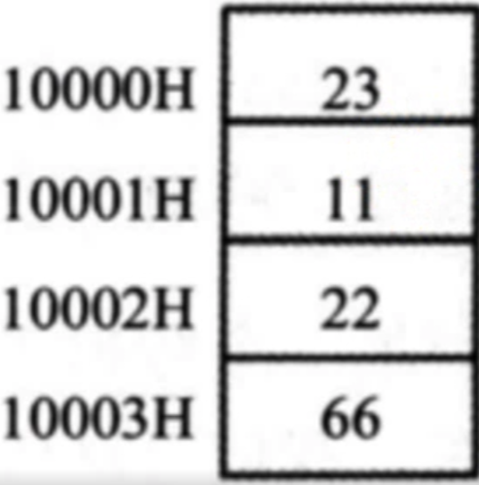
上面3条指令的作用将10000H(1000:0)中的内存数据赋值到al寄存器中
mov al.[address]的意思将DS.address中的内存数据赋值到al寄存器中 由于al是8位寄存器，所以是将一个字节的数据赋值给al寄存器
8086不支持将数据直接送入段寄存器中，mov ds,1000H是错误的
将AH中的数据送入内存单元AC10BH中
段:AC10H 偏移:BH mov bx,AC10H mov ds,bx mov[B],AH
大端小端
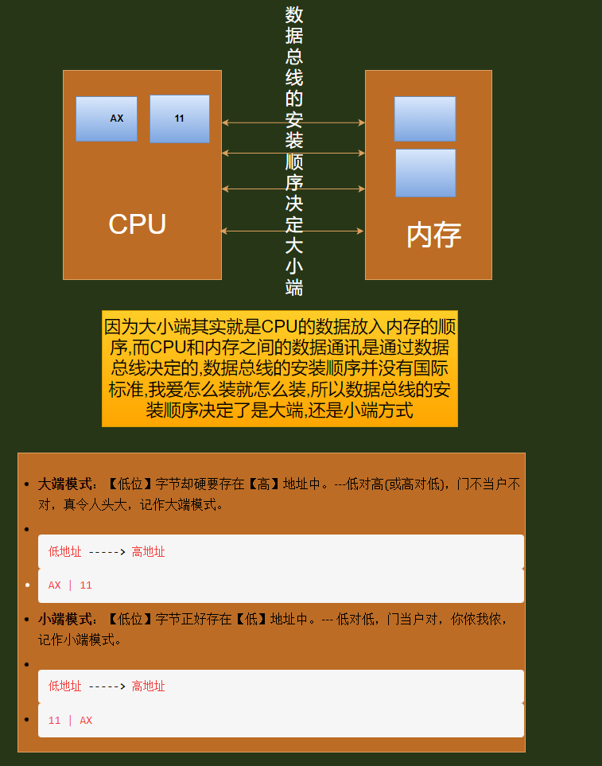
mov指令
-
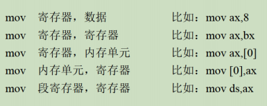
-
注意: mov内存单元.内存单元"是不允许的。比如mov [0],[1]
- 为什么不允许,因为这里没有寄存器我不知道你要取几个字节，放几个字节
-
mov dx,20
- 20等价于偏移20个字节
-
add,sub指令
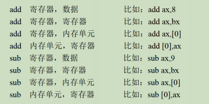
数据段
对于8086来说，在编程时，可以根据需要，将一组内存单元定义为一个段
-
我们可以将一组长度为N(N<=64KB)、地址连续、起始地址为16倍数的内存单元当做专门存储数据的内存空间，称为数据段。比如用123B0H~123B9H这段内存空间来存放数据，我们就可以认为123B0H~123B9H是一个数据段，它的段地址为123BH,长度为10字节
-
如何访问数据段中的数据?
- 用DS存放数据段的段地址，再根据需要，用相关指令访问数据段中的具体单元
8086开发工具
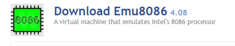
下载地址
- 演示代码 assume cs:code
code segment
mov ax,1122H ;将1122H放入ax寄存器
mov bx,3344H ;将3344H放入bx寄存器
add ax,bx ;ax = ax + bx
mov ah, 4cH ;是向A寄存器高字节ah赋值16进制数4c,此语句和int 21h 组合成一个完整的中断调用功能
int 21H ;21H是中断码
;int 表示中断，中断有很多种类，
;其中21h表示DOS系统的系统调用中断这一大类，下面还分了很多小类
;小类的选择是放在ah寄存器中的。2个语句组合表示这个中断是21h大类中的4c小类
;类似于（21h）年级 （4c）班
code ends
end
-
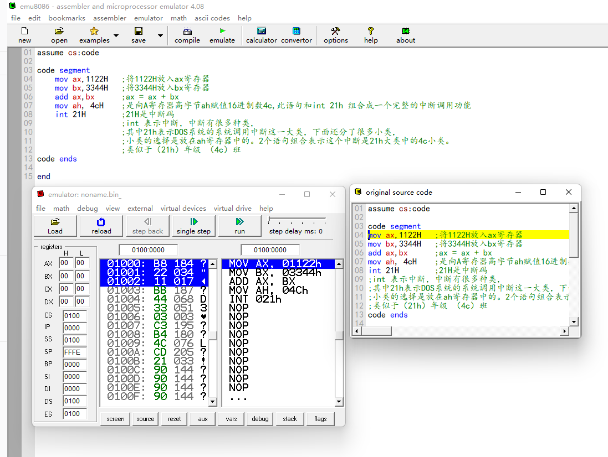
汇编指令
- 如mov、add、sub等 有对应的机器指令，可以被编译为机器指令，最终被CPU执行
伪指令
-
如assume、segment、ends、end等 没有对应的机器指令，由编译器解析，最终不被CPU执行
-
segment、ends 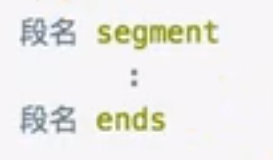
-
assume
-
end
-
db(define byte)自定义字节 dw(define word)自定义字
-
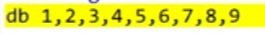
注意点
-
如果用的是dl 进行相加的时候因为用的是低8位,所以会溢出,他不会进行进阶放到dh
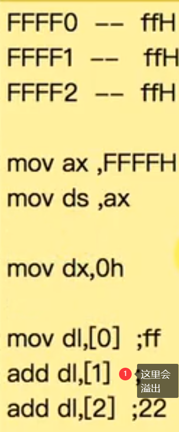
- 正确版本
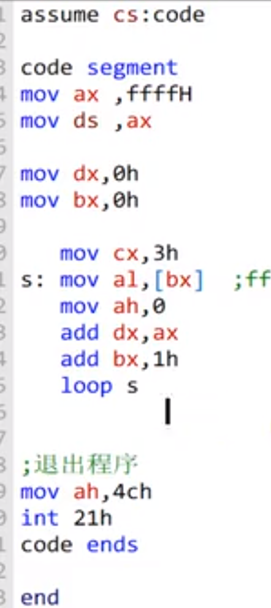
中断
中断是由于软件,硬件的信号,使的CPU暂停当前的任务,转而去执行另一段子程序
也就是说,在程序运行的过程中,系统出现了一个必须有CPU立即处理的情况,此时,CPU暂时中止当前程序的执行转而处理这个新的情况的过程就叫中断
分类
-
硬中断(外中断)
- 由外部设备,比如网卡,硬盘随机引发的,比如当网卡收到数据包的时候,就会发出一个中断,网卡信号发给操作系统,操作系统然后通过API告诉你
-
软中断(内中断)
- 由执行中断的指令产生的,可以通过程序控制触发
-
常见中断
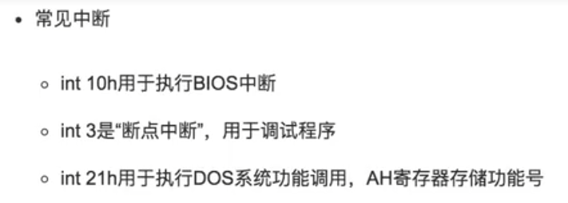
栈
图示
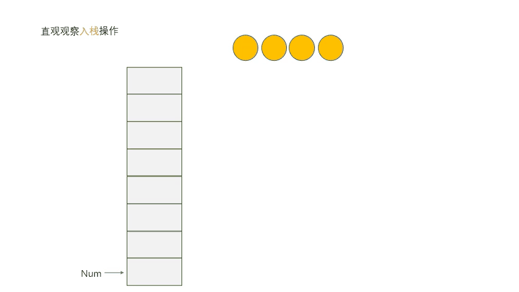
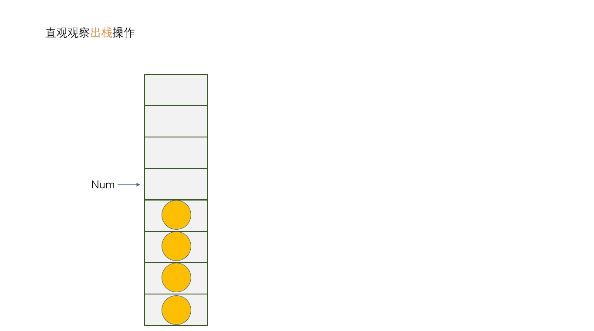
解释
-
8086会将CS作为代码段的段地址，将CS:IP指向的指令作为下一条需要取出执行的指令
-
一个栈段最大可以设为多少?为什么?
- 指令所完成的功能的角度上来看，push、pop等指令在执行的时候只修改SP，所以栈顶的变化范围是 0~FFFFH，从栈空时候的SP=0，一直压栈，直到栈满时SP=0;如果再次压栈，栈顶将环绕，覆盖了原来栈中的内容。SP的最大范围值是FFFF,所以一个栈段的容量最大为64KB。
-
8086会将DS作为数据段的段地址， mov ax.[address]就是取出DS:address的内存数据放到ax寄存器中
-
8086提供了PUSH(入栈)和POP(出栈)指令来操作栈段的数据 比如push ax是将ax的数据入栈，pop ax是将栈顶的数据送入ax
-
8086会将SS作为栈段的段地址，任意时刻，SS:SP指向栈顶元素
-
8086CPU的入栈和出栈操作都是以字为单位进行的
-
8086CPU 不保证我们对栈的操作不会超界。这也就是说，8086CPU只知道栈顶在何处(由SS:SP指示)，而不知道我们安排的栈空间有多大。这点就好像CPU 只知道当前要执行的指令在何处(由CS:IP指示)，而不知道要执行的指令有多少。从这两点上我们可以看出 8086CPU 的工作机理，它只考虑当前的情况:当前的栈顶在何处、当前要执行的指令是哪一条。
-
我们在编程的时候要自己操心栈顶超界的问题，要根据可能用到的最大栈空间，来安排栈的大小，防止入栈的数据太多而导致的超界;执行出栈操作的时候也要注意，以防栈空的时候继续出栈而导致的超界。
8086 栈操作
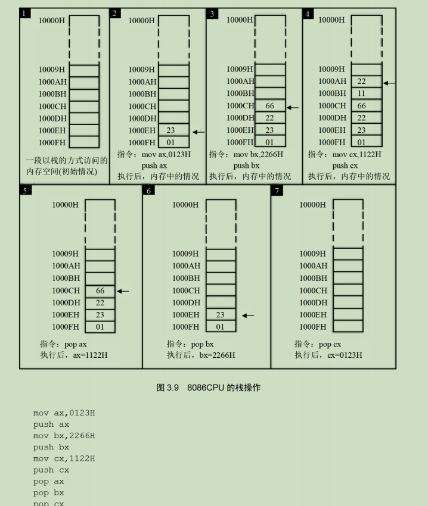
push ax
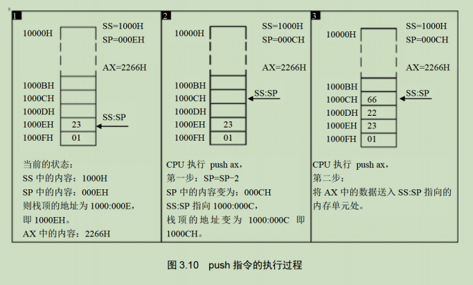
pop ax
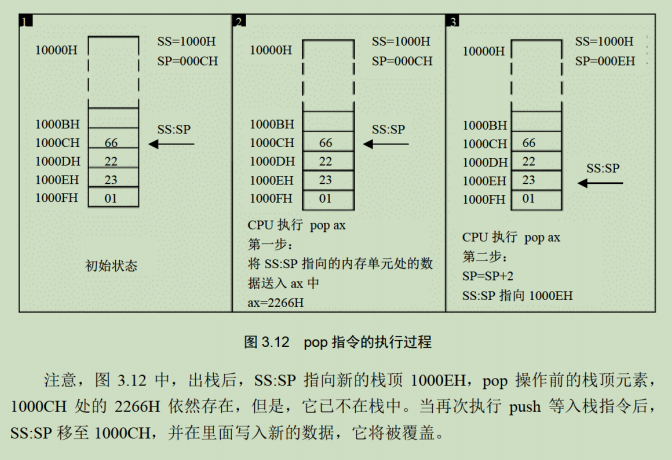
push/pop
-
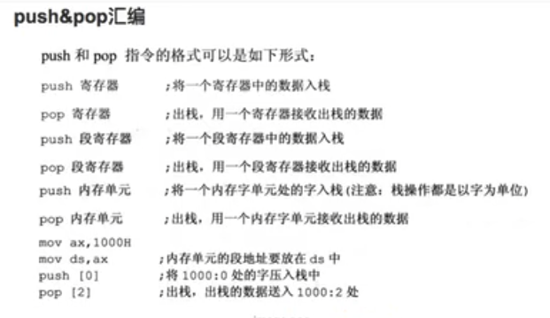
- 注意:在8086中,push、pop操作的数据都是2个字节的
栈段
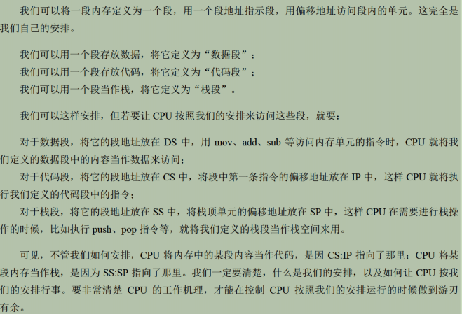
-
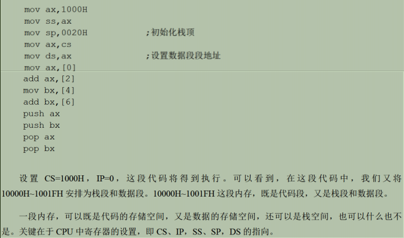
Loop指令
LOOP等价于jmp, jmp到标号位置
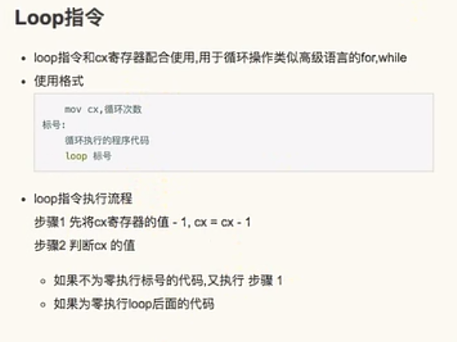
- ;计算2^6使用1oop配合cx
mov ax,2h
mov cx,5
s: add ax, ax loop s
mov ah, 4cH
int 21H
end
-
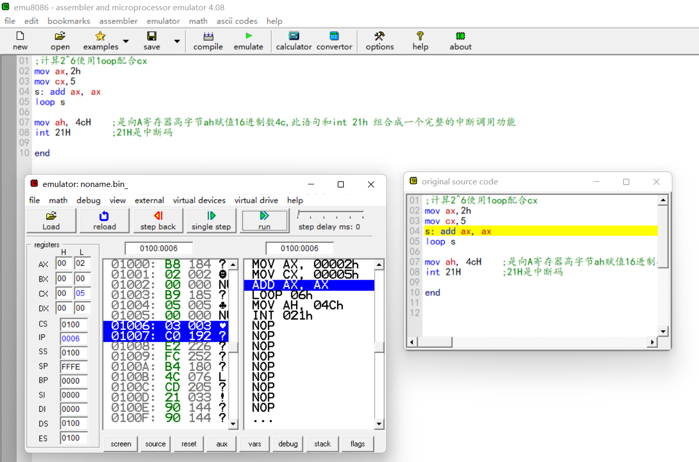
- ;计算2^6使用1oop配合cx
mov ax,2h
mov cx,0H s: add ax, ax loop s
mov ah, 4cH
int 21H
end
-
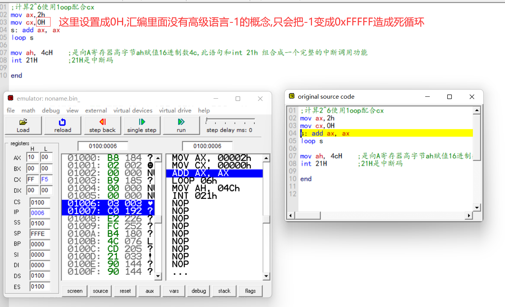
代码分段
场景
-
当我们需要在内存中申请一块空间，可以使用伪指令db和dw db–>define byte 定义字节 dw–>define word 定义字 如果按照以下写法 assume cs:code code segment db 1,2,3,4,5 db ‘hello’ db “pangshu”
mov al ,cs:[0] ;取出预先定义好的数据 ip默认从0开始 ;退出程序 mov ah 4ch int 21h code ends end 以上代码存在一个问题, 由于数据是在代码段中定义, cpu默认将数据识别为代码, 将导致数据不可用
-
解决办法
- assume cs:code code segment db 1,2,3,4,5 db ‘hello’ db “pangshu”
-
start: mov al ,cs:[0] ;取出预先定义好的数据 ip默认从0开始 ;退出程序 mov ah 4ch int 21h code ends end start ;标记名称可自定义
标记是为了告诉编译器代码段入口位置, 这样就能保证db数据不被识别为指令
知识点
-
如果我想定义20个0数据,有一种快捷的语法
- assume cs:code code segment db 20 dup(0) ;申请20个字节的空间 然后存放0
start: mov al ,cs:[0] ;取出预先定义好的数据 ip默认从0开始 ;退出程序 mov ah 4ch int 21h code ends end start ;标记名称可自定义
-
数据段和栈段的定义
-
assume cs:code code segment db 20 dup(0) ;可存数据也可当作栈 db 20 dup(0) ;可存数据也可当作栈 start: ;将数据所在的物理基地址交由ds段寄存器进行存放管理 mov dx,cs mov ds,dx mov ax,1122h mov [0],ax
;定义栈段 将栈空间所在的物理基地址交由ss栈段进行保存管理 mov ss,ds mov sp,40 ;从高字节往低字节存放 push ax
;退出程序 mov ah 4ch int 21h code ends end start ;标记名称可自定义
-
-
分段定义
- assume cs:code,ds:data,ss:stack
;数据段 代码段可直接获取数据段中数据, 相当于高级语言中的局部变量 stack segment db 20 dup(0) ;定义数据相当于是定义了段地址 stack ends
;数据段 代码段可直接获取数据段中数据, 相当于高级语言中的全局变量 data segment db 20 dup(0) ;定义数据相当于是定义了段地址 age dw 20h ;给数据取个别名为age
data ends
code segment
start: mov ax,1122h mov age,ax ; 相当于[14h],ax
;退出程序
mov ah 4ch
int 21h
code ends end start ;标记名称可自定义
Call和ret指令
call指令
- 将下一条指令的偏移地址入栈
- 跳转到定位的地址执行指令
- call 标号
- call 函数地址
ret指令
- 将栈顶的值POP给IP
- 跳转到定位的地址执行指令
图示
-
函数局部变量有可能入栈,得看寄存器空间够不够,如果寄存器不够用,或者如果在函数内部再次调用函数
- 在函数内部再次调用函数,b会入栈 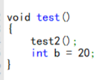
汇编函数调用过程
-
栈帧是指为一个函数调用单独分配的那部分栈空间。比如，当运行中的程序调用另一个函数时，就要进入一个新的栈帧，原来函数的栈帧称为调用者的帧，新的栈帧称为当前帧。被调用的函数运行结束后当前帧全部收缩，回到调用者的帧
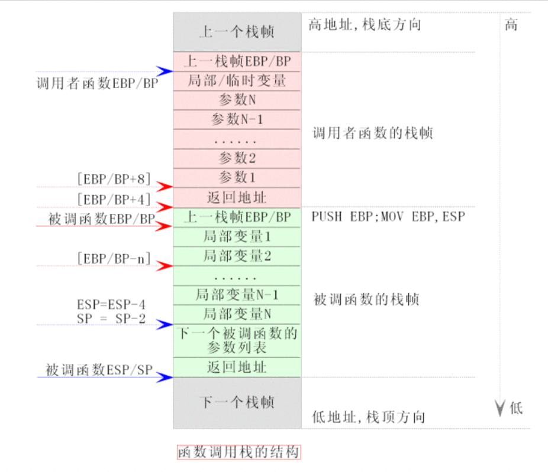
- 当发生函数调用的时候,栈空间中存放的数据是这样的:
1、调用者函数把被调函数所需要的参数按照与被调函数的形参顺序相反的顺序压入栈中,即:从右向左依次把被调函数所需要的参数压入栈; 2、调用者函数使用call指令调用被调函数,并把call指令的下一条指令的地址当成返回地址压入栈中(这个压栈操作隐含在call指令中); 3、在被调函数中,被调函数会先保存调用者函数的栈底地址(push ebp)(从高内在地址–》低内存地址),然后再保存调用者函数的栈顶地址,即:当前被调函数的栈底地址(mov ebp,esp); 4、在被调函数中,从ebp的位置处开始存放被调函数中的局部变量和临时变量,并且这些变量的地址按照定义时的顺序依次减小,即:这些变量的地址是按照栈的延伸方向排列的,先定义的变量先入栈,后定义的变量后入
- ebp是帧指针，它总是指向当前帧的底部；esp是栈指针，它总是指向当前帧的顶部
标记寄存器
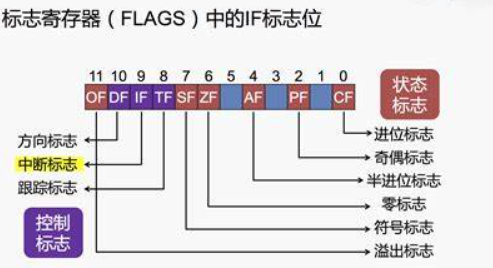
这是一个存放条件标志、控制标志寄存器，主要用于反映处理器的状态和运算结果的某些特征及控制指令的执行
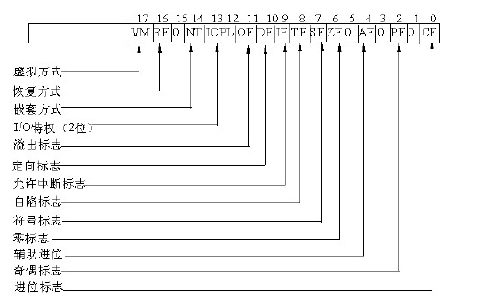